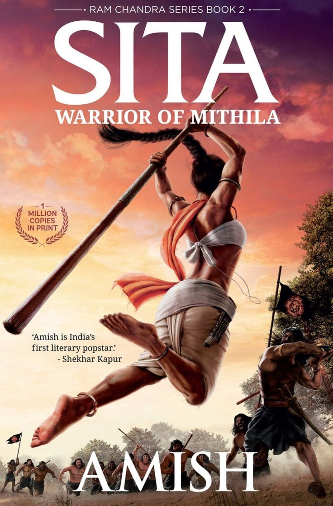

Writing on Twitter brings the energy of a début to every phrase. You could say it imbues writing with a sense of performance, though writing has always involved performance in the sense of performance anxiety. The question for the writer who is leaving multiple pages crumpled on the floor—literally or figuratively—is for whom is that line, or paragraph, unsatisfactory? Who is the appraiser of one’s own unpublished, or even unwritten, work?
The editor Ted Solotaroff wrote an essay called “A Few Good Voices In My Head,” in which he talked about managing this feeling of having an audience. His prescription is summed up in his title: a couple of trusted voices with whom a writer will engage in a dialogue—sometimes literally, more often not. Twitter is messing with this equation: I have many more voices in my head than I ever had before.
Managing the anxiety of composition is an essential part of writing. One must master the process of shepherding the private into public.
There are bound to be false starts, excursions that turn out to be dead ends. But these ephemera—notes, journals, drafts—are all composed in a kind of psychic antechamber whose main feature is a sense of aloneness. They are the literary equivalent of muttering to yourself in a state of melancholy, or of dancing in front of the mirror with music blasting when you are alone in your room. Both of these are best done when no one is home.
Almost everybody who is a writer these days gets, at some point, a lecture on the necessity of being “on” Twitter and Facebook. It’s a tool of selling and career building. It is, for writers of all ages and stages, not so much required reading as required writing. The whole thing seems stupid at first: you ignore whoever is giving you this lecture, until one day you decide, O.K., let’s try it out, and then discover that it’s kind of fun. And, as long as it’s done in moderation, it is kind of interesting. But could Twitter possibly be productive, beyond the basic act of publicizing what you have written and/or proving that you still exist?
Source:
The New Yorker
The Ongoing Story: Twitter and Writing
By Thomas Beller,
June 18, 2013
Nevertheless, let’s look at social networks for writers
Goodreads is a virtual bookshelf that allows you to share what you’re reading with the world. You can write and read book reviews, connect with other readers, and check out a plethora of great book recommendations based on the books you’ve already read. This is a great tool for writers and readers who want to stay connected and track what they’re reading.
Writing career boost: Goodreads is essential to promoting yourself as a writer, since it connects you with so many avid readers. If you can get a popular reviewer on Goodreads to review your book, there’s a chance for thousands of people to learn about you and your writing.
The Writing Room offers many resources for up-and-coming writers about writing, writers groups, writing activities, and more! Click the Experts tab for opportunities to connect with a writing mentor who can help polish your work. This is the perfect site for authors who want to get to know others who write in their genre while finding great tools to help hone their writing skills.
Writing career boost: If you want to improve your craft, this is the place to be! Asking for feedback from the experts and looking at the How To section are great ways to get your writing ready to submit to editors and agents.
Each November, writers across the world log on with the goal of writing a 50,000-word novel in a month! You can connect with writers to discuss your novel project, track your writing progress, and get all the support you need in the forums. This is a great community of writers of all ages who are happy to offer encouragement and advice.
Writing career boost: Several best-selling novels started as National Novel Writing Month projects. Whether you’re a veteran writer or just starting out, the National Novel Writing site and the supportive community it hosts could be the push you need to work on what may be the next big best seller!
This site is like a virtual coffee shop where you can chat with other writers. You can ask for reviews of your work and get more information about how to get your work published. Users can also contribute writing guides that other authors can read. This is a great site for writers looking to get feedback and learn more about their craft.
Writing career boost: If you’re concerned about the quality of your writing, this site provides useful feedback to help you determine if you’re on the right track with your story, poem, or book. And if you aren’t heading in the right direction or you’re struggling with the technical aspects of writing, the writing tips and guides will get you back on track.
A Few Words About Online Etiquette With Other Writers
Before leaping onto any of these social networks
for writers (or many of the others out there!), you should always know your goal
for joining the site. Don’t join these sites to try and sell your writing and make money.
These social networks are meant for making connections with other writers, potentially
interacting with fans, and learning more about writing.
India: Does history is already written?
History is just beginning!
Writing about mythology makes me more Indian:
Amish Tripathi, author of Shiva Trilogy

A banker for 14 years and now a bestselling author, Amish Tripathi has donned many caps in his nine-year-long writing career, and with panache.
An IIM-Calcutta graduate, the 44-year-old’s entered the world of publishing in February of 2010 when he debuted with The Immortals of Meluha,
the first book of his Shiva Trilogy.
A riveting mash-up of mythology and fiction, the novel was an instant hit with readers and soon became
a cult favourite with the subsequent release of sequels The Secret of the Nagas and The Oath of the Vayuputras. Indian readers, especially young adults,
at the time, were just warming up to literature outside of the popular genres.
That a humanised treatment could be imparted to figures and deities from the Indian mythology was a relatively fresh concept if not niche.
What does it mean to be a best-selling author?
Does it mean the freedom to write what you want or stick to the genre that has become immensely popular with the readers?
Amish is an IIM-Calcutta graduate
Amish: No one can give you freedom, you can only take it for yourself. If someone wants to surrender their freedom,
then even the so-called “bestseller” tag can become a prison. I believe, when you are writing, you should set your mind completely free;
you shouldn’t think about whether publishers or critics or readers or anyone else will like it or not. It’s the voice of your soul - write with the honesty
of your heart. Whether the book works or doesn’t, that’s up to the divine. Leave that for the later; write with your heart.
While writing, like I said, I don’t really think too much about how people will react to it. I just write for myself. But in the marketing phase, one starts getting nervous. So, I didn’t really know how my readers will react to this because they are not used to something so dark from me. Having said that, there are many TV series, which are much darker… but by God’s grace, the first week has done really well.
The richest writer in China. Scandals and series on the book.
Guo Jingming (Chinese: 郭敬明; pinyin: Guō Jìngmíng; born June 6, 1983) is a Chinese young adult writer. Also known as Edward Guo. In addition to being an author and businessperson, Guo is also a teen pop idol and popular celebrity figure.
The 30-year-old Mr. Guo seems ideally placed to understand new urbanites because he is one. Born to a middle-class family in Zigong, Sichuan, he moved to Shanghai when he won the New Concept Writing Competition in 2001. He attended college and wrote a novel in his spare time. His book, “City of Fantasy,” sold more than 1.5 million copies. In 2004, Mr. Guo, still a student, followed up with a second novel, which sold 600,000 copies its first month.
Scandal erupted, however, when he was accused of plagiarism;
in 2006, a court ruled that the second book shared major plot elements and other similarities with another author’s work and ordered Mr. Guo to pay damages. He did so, albeit without apologizing or acknowledging error, and was castigated in the Chinese press.
The incident, though, did little to harm his career. His 2007 novel, about a pregnant high school student who kills herself, sold a million copies in 10 days. Mr. Guo then wrote the “Tiny Times” series, which includes a third book; became an editor at Changjiang Literature and Art Publishing House; and founded a magazine to publish other young novelists.
Today, he has a publishing and entertainment empire that includes ZUI Book and the magazines ZUI Fiction, ZUI Novel, and ZUI Comic. (ZUI stands for “zestful, unique, ideal.”)
“I never thought this movie would lead to so much discussion,” Mr. Guo said. “But this state of affairs in which everyone can explain his own viewpoint is good.”
Jo Lusby, the managing director of Penguin North Asia, who has worked with Mr. Guo on several projects, said, “It takes an awful lot of courage to do this.” She added, “It’s not a given that these won’t be censored,” referring to the movies. “There are no easy choices in China. Everything has risks.”
Mr. Guo said he had studied the “technically useful comments” about his filmmaking, but “when it comes to ‘Tiny Times,’ the work itself, I feel that I will stick with my own ideas.” He added, “After all, I am the person who best understands ‘Tiny Times.’ ”
The debate is not over: “Tiny Times 3” is due out next year.
The Big Book Prize has been presented in Moscow
Zuleikha opens her eyes by Guzel Yakhina
This sensational debut novel is the main talking point of this year’s award, which saw a newcomer to the literary scene take first prize ahead of such established writers as Victor Pelevin and Alexei Varlamov.
Guzel Yakhina was born in Kazan in 1977 and now lives in Moscow. She used to work in PR and graduated from the Moscow Screenwriting Academy this year. Zuleikha Opens her Eyes has already received the Yasnaya Polyana Literary Prize and the Big Book online readers’ selection.
The novel is about Zuleikha, a peasant living in a remote Tatar village in the 1930s.
The villagers are sent to a Siberian camp along with dispossessed residents from neighboring settlements. At its heart, this is a family story, which the author herself is keen to emphasize. Jury member Lisa Hayden describes it as a “moving novel” that “deserves all the praise and awards it has won”, while the critic Pavel Basinsky writes that in this novel “relating what the grandmother says is not enough; the author has had to actually become the grandmother for a while.”
Vladimir Putin held a meeting of the Presidential Council on the Russian Language.
The interest in the Russian language will grow as our well-being in the broadest sense of the word, including individual welfare and national welfare,
and our influence continue to grow. Then, there will be interest in the language.
If not, there will be no interest no matter what you do.
We may have two or three more authors like Tolstoy or Pushkin.
Their books will get translated, no doubt about it, and there will be good translators.
But if our country is strong and appealing, people will start learning the Russian language.
Source: Meeting of Council on Russian Language,
November 5, 2019 18:40 The Kremlin, Moscow
www.kremlin.ru
It's your turn to write.
JK Rowling net worth:
JK Rowling is a British author and movie producer who has a net worth of $1 billion. JK Rowling is one of the wealthiest private citizens in the United Kingdom and the first author in the world to achieve a net worth of $1 billion.
‘You Have to Plan’
Rowling:
You have to resign yourself to the fact that you waste a lot of trees before you write anything you really like, and that’s just the way it is. It’s like learning an instrument, you’ve got to be prepared for hitting wrong notes occasionally, or quite a lot, cause I wrote an awful lot before I wrote anything I was really happy with.
Not afraid to revise your plan
Revise it and revise it and revise it.
Back in 2006 Rowling posted on her website a snippet of her series grid for the fifth Potter book,
Order of the Phoenix.
All the same, it’s not clear.
Take a free online course.
Before picking a class,
decide what part of the writing process you want to learn
more about. Establish Your Goals.
What’s your goal?
Are you looking to write a best-seller?
Do you want to increase your revenue by self-publishing your book on Amazon?
Are you planning to improve your brand storytelling?